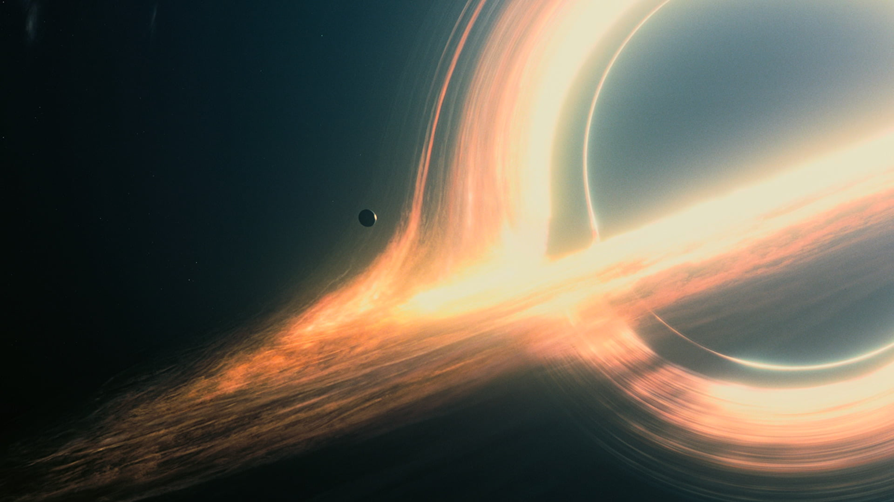
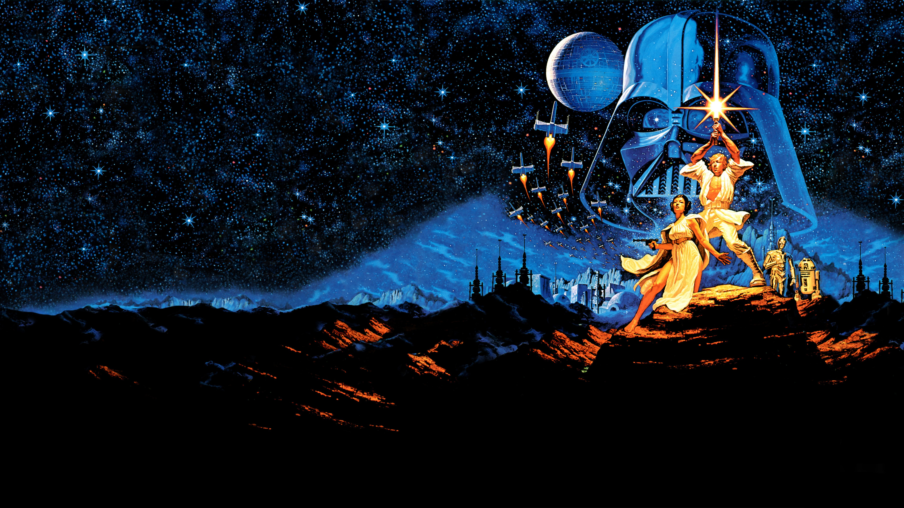
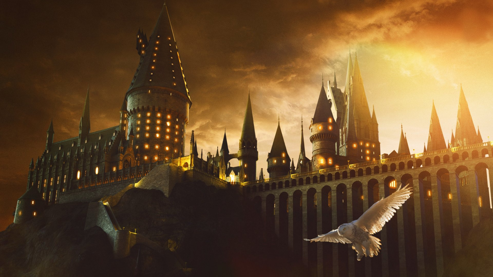
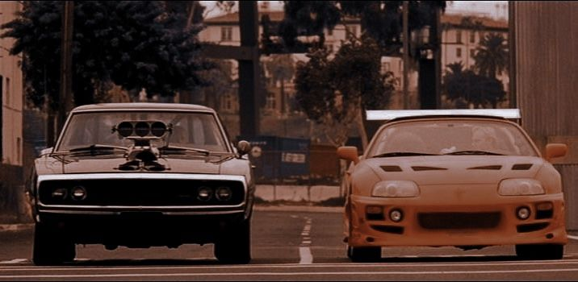
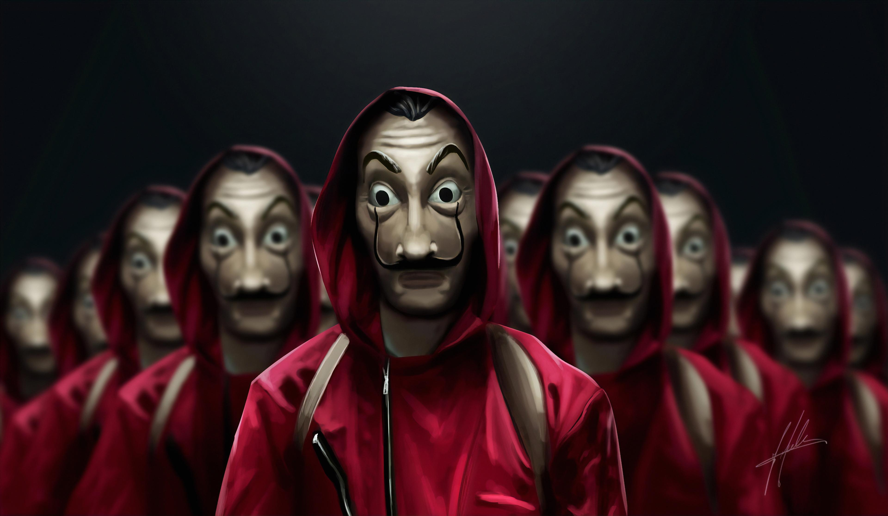
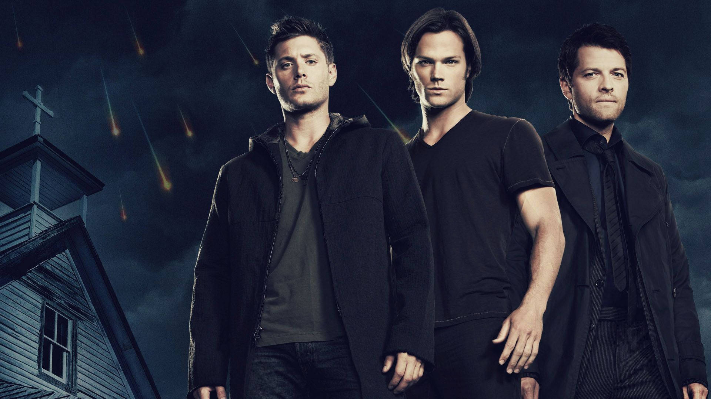
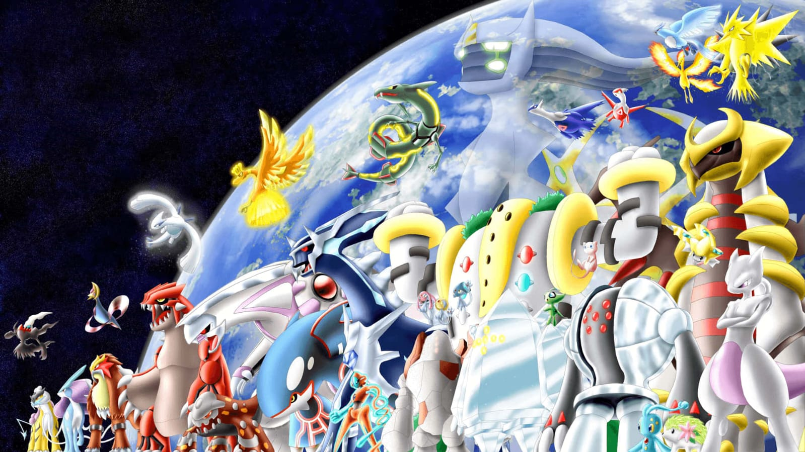

Interstellar
Interestelar é um filme de 2014, que ciência e emoção, e se tornou um dos maiores sucessos de bilheteria e crítica da década.

Uma jornada épica pelo espaço e pelo tempo.

A saga que redefiniu a ficção científica.

Magia e aventura que encantaram gerações.

É uma comédia sobre cinco amigos de infância que se reencontram décadas depois, durante um feriado de 4 de julho, e descobrem que crescer não significa necessariamente amadurecer.

Uma explosiva mistura de velocidade, ação e adrenalina, onde corridas ilegais se cruzam com laços de família.

Uma série espanhola que mistura ação e suspense em um assalto épico à Casa da Moeda.

Uma série que acompanha os irmãos Winchester em uma luta épica contra demônios, monstros e forças sobrenaturais.

Uma série que acompanha Ash e seus amigos em aventuras pelo mundo, capturando criaturas incríveis e enfrentando batalhas cheias de amizade e superação.
ScreenTime é um espaço dedicado a quem ama cinema e séries. Nosso objetivo é oferecer recomendações de filmes cuidadosamente selecionados, ajudando você a descobrir novas histórias, clássicos inesquecíveis e produções que merecem sua atenção. Seja para uma maratona no fim de semana ou para escolher o próximo título da sua lista, aqui você encontra inspiração para aproveitar ao máximo o seu tempo de tela.
Confira os filmes e séries que estão chamando atenção e conquistando o público.
Interestelar é um filme de 2014, que ciência e emoção, e se tornou um dos maiores sucessos de bilheteria e crítica da década.
Star Wars nasceu em 1977 e continua vivo até hoje, com o mais novo capítulo (O Mandaloriano e Grogu, 2026) trazendo a franquia de volta às telonas após sete anos.
Os filmes de Harry Potter acompanharam o crescimento dos personagens e dos atores ao longo de uma década, transformando a saga em um fenômeno cultural global que continua vivo até hoje.

Gente Grande é uma comédia sobre amizade e reencontros, que mesmo sem agradar a crítica, conquistou o público e se tornou um sucesso de bilheteria, garantindo uma sequência três anos depois.
Velozes e Furiosos é uma das franquias mais duradouras de Hollywood, que cresceu de corridas de rua em Los Angeles para aventuras globais com vilões cada vez mais grandiosos.
Uma das produções espanholas mais marcantes da última década, que começou com um assalto à Casa da Moeda e evoluiu para uma trama cheia de tensão, reviravoltas e personagens carismáticos.
Uma das séries mais longas da TV americana, que iniciou com os irmãos Winchester caçando criaturas sobrenaturais e se expandiu para batalhas épicas contra anjos, demônios e forças cósmicas.
Uma das franquias mais duradouras da cultura pop, que nasceu com a jornada de Ash e Pikachu e cresceu para se tornar um fenômeno global de jogos, filmes e aventuras inesquecíveis.
Mergulhe no universo do cinema e das séries através da nossa galeria. Encontre imagens, cenas marcantes e descubra produções que conquistaram o público e continuam inspirando novas histórias.
Acessar GaleriaTem sugestões, dúvidas ou quer compartilhar sua opinião sobre filmes e séries? Fale conosco e participe do ScreenTime.
Entrar em contato